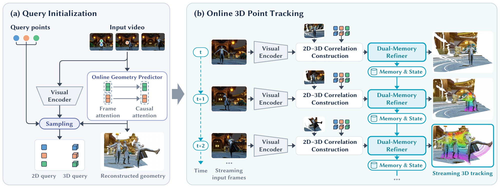

Under Review
1Institution 1 2Institution 2
StreamTAP3D tracks 3D points from a monocular RGB stream, processing each frame as it arrives — zero lookahead, constant per-frame cost, and no precomputed depth or camera poses.
Because memory is compressed into constant-size states, the per-frame cost does not grow with video length. StreamTAP3D keeps tracking over minutes-long sequences.
Trajectories are shown in world coordinates on top of the streaming reconstruction; colored tracklines mark dynamic foreground points. Click any clip to enlarge.
StreamTAP3D running live on a single laptop GPU with a webcam stream. Left: the scene filmed by a handheld phone. Right: screen recording of the live system.

@inproceedings{streamtap3d,
title = {StreamTAP3D: Streaming 3D Point Tracking with Hybrid Memory},
author = {First Author and Second Author},
booktitle = {arXiv preprint},
year = {2026},
}